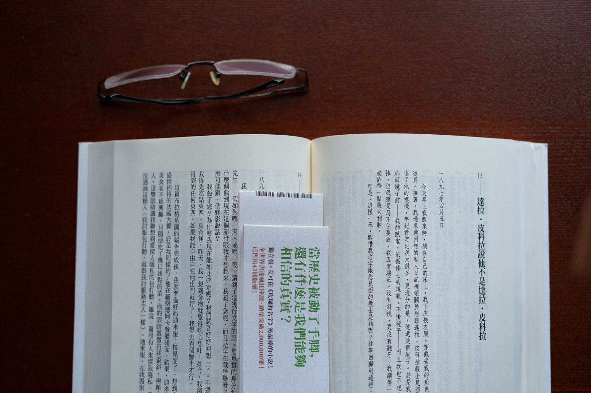
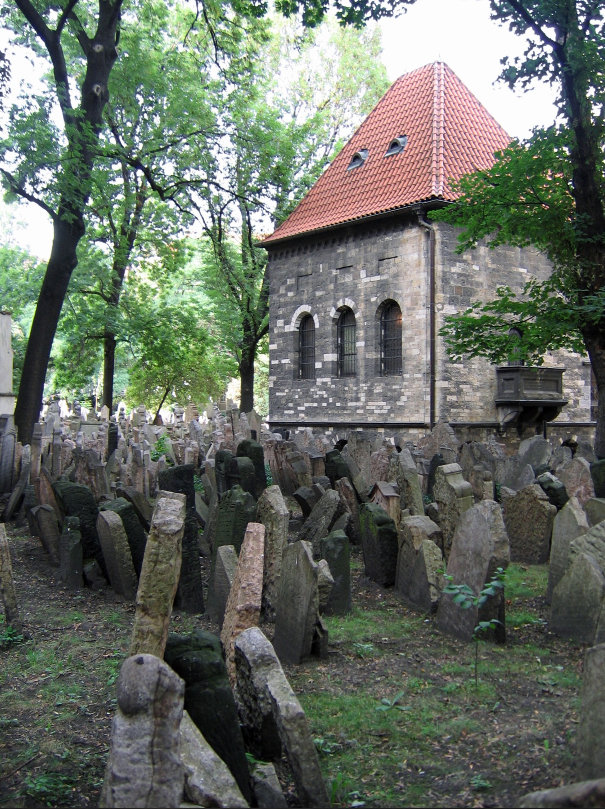

打开这本翁贝托·埃科的《布拉格墓园》时，第一反应是有些吃力。一方面，台湾出版的繁体竖排文字，在视觉上、甚至心理上都有一种“阻尼感”；再撞上书中庞大的注释系统，成了货真价实的智力苦旅。另一方面也在于自己：对十九世纪中后期的欧洲，尤其是法兰西第三共和国和正在统一过程中的意大利，我所知不多。
还有一点难度来自两岸译名的差异。比如书中很要紧的地名“杜林”，原来就是简体中文里熟悉的“都灵”。
读前几章时，手指不得不频繁地在正文与行内、页脚注释之间跳转。耐着性子，像梳理复杂电路图一样去对齐这些历史信号时，便会意识到译注的价值。译者蔡孟贞不只是在翻译文字，也在帮读者重建那个由都灵秘密警察、法国共济会、耶稣会与沙俄情报机构交织而成的十九世纪欧洲政治生态。
这种费劲的阅读，逼着我把书读得慢了下来；而慢读，反而成了成倍增加阅读乐趣的微妙体验。

艾可在书中最令人叹服的笔法，是他在叙事时间线上玩的一场“倒错式缝合”。不管情节跟着加里波第的红衫军和大仲马的船漂流到哪里，读者始终知道：小说的“现在进行时”发生在1897年。67岁的西莫尼尼严重失忆，在巴黎的旧货铺里写日记，试图打捞自己丢失的记忆。
艾可的结构精密得像一个闭环套娃。我们以为自己在跟随西莫尼尼经历大时代的风云变幻，但本质上，那些历史都是一卷早已录制完毕、又多处受损的“历史录像带”，在1897年的日记里被重新读取。
更绝妙的是，艾可让达拉·皮科拉神父在日记里留下回复，又安排一个“叙述者”来回穿插。每当读者在过去的流年中产生“身临其境”的幻觉，艾可就用主线上的日记断片，无情地把人拉回1897年。它不是纪实，而是一场关于“记忆如何建构现实”的硬核心理模拟。
如果艾可只写几个沙俄特务躲在小黑屋里奉命编造谎言，这部作品会单薄得多。真正令人毛骨悚然的地方在于，他创造了西莫尼尼这个“黑产外包工”，并让他游走于真实存在的历史人物与政治势力之间。
艾可借此剥离了阴谋论最核心的伪装：谎言往往不是无中生有的神话，而是对既有现实的恶性缝合。
西莫尼尼不需要发明仇恨。当时法国社会的政教冲突、反犹主义、对共济会和耶稣会的恐惧，都是现成的材料。他要做的，只是把这些真实存在的偏见与焦虑接通，再向不同阵营批发他们“渴望看见的敌人面目”。
他最后参与拼接出的，是后来被称为《锡安长老会纪要》的反犹主义伪作。历史上的这份文本并非一人一时凭空写成，而是剽窃、改写多种十九世纪政治讽刺和反犹文学的产物。艾可则用西莫尼尼这个虚构人物，把这条复杂的伪作传播链拟人化了。
这种“平庸之恶的工业化”笔法，让文字产生一种冷峻的荒诞感。一份后来被纳粹宣传反复利用的剧毒文本，在书里竟然出自一个为了去高档餐厅吃顿好饭、为了几枚金币而在旧货铺里用糊精和剪刀拼接他人口水的小人。这种解构，比任何宏大的控诉都更具毁灭性。

读到这里，忍不住想到：我们从电影或教科书里看到的，往往是历史“动能释放”的高潮，如法国大革命、俄国革命、两次世界大战和冷战。而像1897年这样表面平静的年份，在中文阅读世界里常常显得边缘。可它们并不平淡，只是危险尚未公开爆发。
这让我想到德剧《巴比伦柏林》。魏玛共和国处在一战之后、纳粹掌权之前，同样是一个暗流汹涌、却不容易被普通读者看清的阶段。顺便说一句：这部剧拍得实在太慢，但第五季如今终于确定在2026年推出，也将是最终季。它大概不会轻松，因为观众已经知道，那个时代将要走向何处。
艾可的伟大之处，恰恰在于他耐心地把我们带回了灾难的“代码编写阶段”。《布拉格墓园》像一台用历史积木搭成的“人类集体疯狂模拟器”。文字朴素如泥土，其间编织的结构却精准如芯片。
透过最后那些书页，似乎可以看到三十多年后的德国，一份早已被证明伪造的荒唐文本，是如何继续被人当成政治武器。在信息传播瞬息万变、阴谋论满天飞的今天，书里的故事一点也不遥远。相反，它会让人感到一阵熟悉的寒意——因为你已经在1897年的巴黎，见过那个手拿剪刀和糊精的老家伙了。